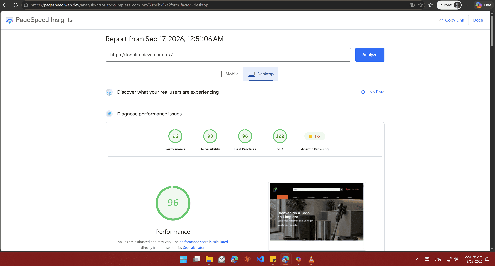
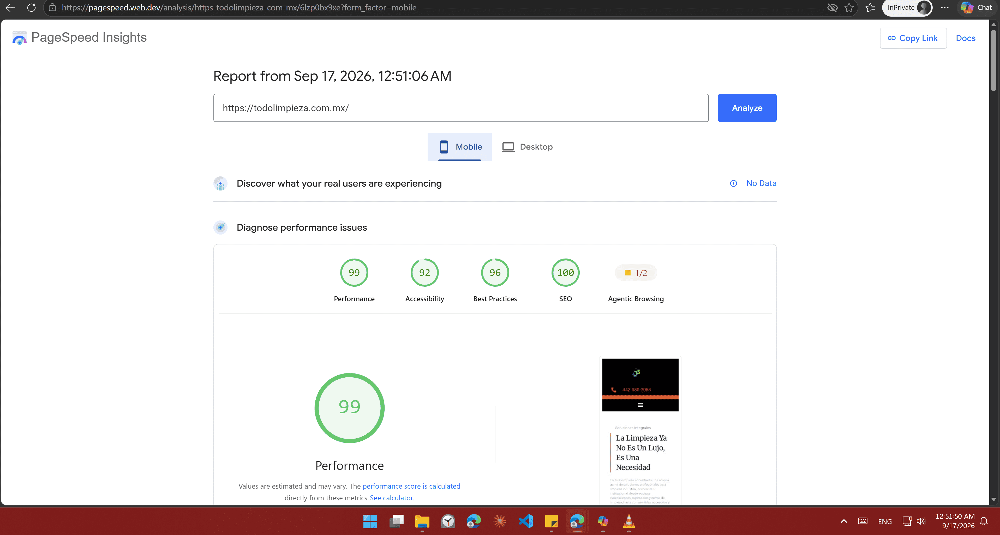

WordPress Cleanup
Reviewed the existing plugin environment and removed unused, unnecessary and overlapping functionality.
A complete WordPress optimization project focused on improving the technical foundation, performance, search readiness, security and reliability of a professional cleaning solutions website serving customers throughout Mexico.
Todo en Limpieza is a professional cleaning solutions website serving industrial, commercial and institutional customers throughout Mexico.
The website provides professional cleaning equipment, industrial vacuum systems, waste containers, glass cleaning accessories, floor care products, Dustvac solutions, Kaivac equipment and other cleaning products and services.
The website also provides product information, rental services, contact options and educational content through its blog.
The client was already familiar with my work because I had previously worked on improving the website's design. Later, the client contacted me again because the website was experiencing slow performance and needed optimization.
Rather than treating the project as a simple speed optimization task, I recommended looking at three connected areas together: SEO, Performance and Security.
Performance affects how quickly visitors can access and interact with the website. SEO helps search engines understand the website and its content. Security helps protect the website and maintain reliability and trust.
Optimizing only one of these areas can leave important gaps. A website can have configured SEO but still provide a poor experience if it is slow. A fast website can still struggle with organic visibility if its SEO foundation is weak. A secure website can still fail to generate organic traffic if performance and SEO are neglected.
The project therefore focused on establishing a cleaner and more structured technical foundation across all three areas.
The initial request was straightforward: the website was slow and needed optimization.
After reviewing the WordPress environment, the website contained many plugins, including multiple optimization systems.
Multiple optimization systems can introduce unnecessary complexity when several tools attempt to control the same areas of the website.
The challenge was therefore not simply installing another caching plugin. The goal was to create a cleaner technical environment with clear responsibilities between each system.
Instead of changing everything at once, the website was approached as a complete technical system with separate stages for cleanup, infrastructure, performance, SEO, security, testing and recovery.
Reviewed the existing plugin environment and removed unused, unnecessary and overlapping functionality.
Configured SiteGround Optimizer selectively according to the requirements of the new performance stack.
Implemented LiteSpeed Cache and configured applicable caching and optimization features.
Connected QUIC.cloud and configured the required DNS infrastructure and nameserver changes.
Installed Rank Math and connected Google Search Console and Bing Webmaster Tools.
Installed and configured Wordfence after the major performance and SEO configuration.
Updated WordPress, themes and plugins, then tested the complete website and its functionality.
Maintained recovery points throughout the project and created a final backup after completion.
Before adding new optimization systems, I reviewed the existing WordPress environment.
The website contained multiple plugins and optimization-related functionality. The first step was therefore to reduce unnecessary complexity instead of adding another layer on top of the existing setup.
Unused, unnecessary and redundant optimization plugins were reviewed and removed where appropriate. Plugins whose functionality could overlap with the planned stack were also considered carefully.
The objective was to create a cleaner foundation where every major system had a clear responsibility.
The website was hosted on SiteGround, so I configured SiteGround Optimizer as the hosting-specific optimization layer.
The objective was not to leave every available optimization feature enabled. Instead, the features were reviewed according to the wider performance strategy.
WebP image delivery and image optimization were retained where appropriate, while other functionality that could overlap with the later performance system was disabled.
This helped establish clearer responsibilities between the hosting environment and the performance stack.
After cleaning the WordPress environment, I installed and configured LiteSpeed Cache as the primary WordPress performance optimization layer.
The configuration covered applicable caching and optimization features while keeping compatibility with the website's theme, plugins and frontend functionality in mind.
The goal was to improve loading and resource delivery without sacrificing functionality or visual appearance.
QUIC.cloud was configured as part of the website's performance infrastructure.
The website was connected to QUIC.cloud and the required DNS infrastructure was configured. This included the necessary nameserver changes through the DNS and hosting configuration.
The CDN was treated as part of the complete caching and performance architecture rather than as an isolated service.
CDN, DNS, WordPress configuration and caching therefore needed to work together before final performance testing.
Once the caching and CDN infrastructure was established, the website's performance configuration was reviewed as a single system.
Page caching and applicable cache settings were configured to reduce unnecessary server processing.
CSS optimization and unused CSS functionality were reviewed and configured where applicable.
JavaScript optimization and unused JavaScript settings were reviewed while maintaining website functionality.
HTML optimization was configured as part of the overall resource optimization strategy.
Image optimization and WebP delivery were incorporated into the performance configuration.
QUIC.cloud was integrated with the caching and DNS infrastructure to support resource delivery.
After the main performance configuration was established, the project moved into SEO optimization.
Rank Math was installed and configured as the primary SEO system.
The website was also connected to Google Search Console and Bing Webmaster Tools to establish direct search engine integrations.
The website contains multiple product and service areas, including cleaning equipment, industrial vacuum systems, waste containers, glass cleaning, floor care and professional cleaning solutions.
Establishing a clear SEO foundation was therefore important for helping search engines understand the website and its content structure.
The homepage was specifically optimized through Rank Math because it represents an important entry point for both users and search engines.
The optimization focused on the SEO title, meta description, relevant SEO settings and search result presentation.
The objective was to provide search engines with clearer information about the website and its primary business offering.
Search engine webmaster integrations were configured after the core SEO foundation was established.
Google Search Console was connected to the website to establish a direct connection with Google's webmaster tools.
Bing Webmaster Tools was also connected to complete the primary search engine integrations.
Once the major performance, CDN, DNS and SEO configuration was completed, the project moved into security.
Wordfence was installed and configured as the primary WordPress security layer.
Security was handled after the major performance configuration so the complete stack could be tested together rather than adding every system simultaneously.
The objective was to create a more reliable WordPress environment while maintaining the website's frontend and administrative functionality.
WordPress core, themes and plugins were updated as part of the maintenance stage.
After the updates, the frontend and WordPress administration area were tested to confirm that the optimization process had not introduced functionality problems.
Optimization is only successful when the website remains functional after the changes.
Testing was performed after the major optimization stages to verify both the technical configuration and the user-facing website.
The product structure was also reviewed across cleaning equipment, vacuum systems, Dustvac, waste containers, floor care, glass cleaning and other professional cleaning solutions.
Backup and recovery were treated as part of the optimization process rather than as a final afterthought.
Multiple recovery points were maintained during the project.
Some configuration changes caused unexpected issues during testing. When something went wrong, a previous working state was restored and the optimization process continued from the stable version.
This allowed configuration and testing to continue without unnecessary risk to the live website.
A final backup was created after the project was completed and the website was confirmed to be working correctly.
Google PageSpeed Insights was used to evaluate the website after the optimization work.
The before and after measurements are presented as evidence of the optimization process rather than relying on a simple claim that the website became faster.


The project was completed through Workana.
The client already knew my work from previous design work on the website and contacted me again for the optimization project.
After completion, the client provided a rating and review through Workana.
This provides independent client feedback in addition to the technical measurements and project documentation.
The final Todo en Limpieza website provides professional cleaning solutions for industrial, commercial and institutional customers across Mexico.
The website includes product categories, professional equipment, waste management solutions, cleaning accessories, rental information, blog content and contact functionality.
The optimization work established a more structured technical environment covering performance, SEO, security, search engine integrations, maintenance and recovery.
The project created a more structured technical foundation across SEO, performance, security, reliability and maintenance.
Rank Math foundation configured, homepage optimized and Google Search Console and Bing Webmaster Tools connected.
Caching, CDN, image delivery, CSS, JavaScript and other applicable performance settings reviewed and configured.
Wordfence installed and configured, with WordPress components updated and recovery points maintained.
Repeated testing, recovery from unexpected issues and a final backup after completion.
Website optimization should not be treated as a single metric.
SEO, performance and security work together as part of the technical foundation of a modern website.
Performance optimization should not simply chase a PageSpeed score. It should improve the underlying environment while maintaining functionality, search readiness, security and recoverability.
For Todo en Limpieza, the process started with cleaning the WordPress environment, establishing performance infrastructure, configuring SEO, implementing security, testing the website and maintaining backups.
The result was a cleaner and more structured technical foundation for the website.
I am a Full Stack Developer and Toptal Verified WordPress Security Developer specializing in building, optimizing and securing modern web solutions.
My work combines development, WordPress engineering, performance optimization, SEO implementation and security to help businesses maintain websites that are functional, fast, discoverable and reliable.
Visit the live Todo en Limpieza website to explore the final result.